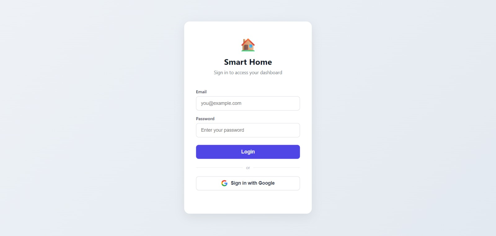
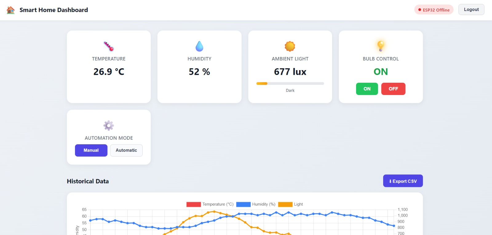
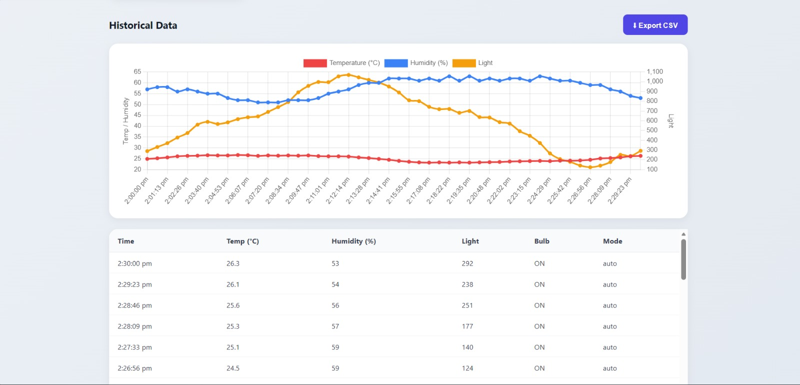

Task 04: Firebase Realtime Web Dashboard
Overview
This task builds a web dashboard that shows live data and sends control commands through the Firebase Realtime Database. The dashboard displays temperature, humidity and light level and has a toggle for a bulb. It is hosted on Firebase Hosting, so it can be opened from any browser.
Objective
- Set up a Firebase project with a Realtime Database.
- Design the database structure for sensor data and control values.
- Build a web page that reads live data and writes the bulb state.
- Deploy the page with Firebase Hosting.
Components
- Firebase project with Realtime Database and Hosting
- HTML, CSS and JavaScript
- Firebase JavaScript SDK
- Node.js and Firebase CLI for deployment
- Code editor and browser
Work
- Created a Firebase project in the Firebase console and added a Web app. Copied the generated firebaseConfig values into the page.
- Created a Realtime Database. Planned two parts: "telemetry/live" holds temperature, humidity and light level, and "controls/bulbState" holds 1 for ON and 0 for OFF.
- Set the database rules [[FILL: describe your rules, e.g. test mode or sign-in required]].
- Built the dashboard page with three value cards for temperature, humidity and light level, plus a toggle for the bulb.
- Connected the page to Firebase. An onValue listener on telemetry/live updates the cards the moment the data changes, with no page refresh. Another listener keeps the toggle in sync with controls/bulbState.
- Switching the toggle writes 1 or 0 to controls/bulbState.
- Tested without any hardware. Changed values by hand in the Firebase console and watched the dashboard update immediately. Flipped the toggle and watched controls/bulbState change in the console.
- Deployed with the Firebase CLI using firebase login, firebase init hosting and firebase deploy. The dashboard is live at Smart Home Dashboard.
Keep only the features your dashboard really has, and delete the rest of this list:
- Login with Firebase Authentication (email and password)
- Table of past readings with search
- Export of the readings to a CSV file
- Auto mode that switches the bulb from the light level
Media



Code
File: index.html
<!DOCTYPE html>
<html lang="en">
<head>
<meta charset="UTF-8">
<meta name="viewport" content="width=device-width, initial-scale=1.0">
<title>Smart IoT Dashboard</title>
</head>
<body>
<h1>Smart IoT Dashboard</h1>
<p>Temperature: <span id="temp">--</span> °C</p>
<p>Humidity: <span id="hum">--</span> %</p>
<p>Light level: <span id="light">--</span> %</p>
<label><input type="checkbox" id="bulbToggle"> Bulb</label>
<script type="module">
import { initializeApp } from "https://www.gstatic.com/firebasejs/10.12.0/firebase-app.js";
import { getDatabase, ref, onValue, set } from "https://www.gstatic.com/firebasejs/10.12.0/firebase-database.js";
const firebaseConfig = {
apiKey: "YOUR_API_KEY",
authDomain: "YOUR_PROJECT.firebaseapp.com",
databaseURL: "https://YOUR_PROJECT-default-rtdb.firebaseio.com",
projectId: "YOUR_PROJECT"
};
const app = initializeApp(firebaseConfig);
const db = getDatabase(app);
const telemetryRef = ref(db, "telemetry/live");
const bulbRef = ref(db, "controls/bulbState");
// Live sensor values
onValue(telemetryRef, (snapshot) => {
const d = snapshot.val();
if (!d) return;
document.getElementById("temp").textContent = d.temperature;
document.getElementById("hum").textContent = d.humidity;
document.getElementById("light").textContent = d.light;
});
// Keep the toggle in sync with the database
onValue(bulbRef, (snapshot) => {
document.getElementById("bulbToggle").checked = snapshot.val() === 1;
});
// Send the toggle change to the database
document.getElementById("bulbToggle").addEventListener("change", (e) => {
set(bulbRef, e.target.checked ? 1 : 0);
});
</script>
</body>
</html>Result
The dashboard was deployed on Firebase Hosting and opened from a browser. Sensor values appeared on the page as soon as they changed in the database, and the bulb toggle wrote its state to the database in real time.
Learnings
- Firebase Realtime Database pushes changes to every connected page, so no refresh or polling is needed.
- The database works as a shared meeting point. The web page and the ESP32 never connect to each other, they only read and write the same paths.
- Planning the data structure first made the hardware code in Task 5 simple to match.
- Testing the dashboard by editing values in the console shows that the web side works before any hardware is connected.
- Firebase Hosting gives a free public HTTPS link for a static site with one deploy command.
- The database rules decide who can read and write, so they must be set deliberately.